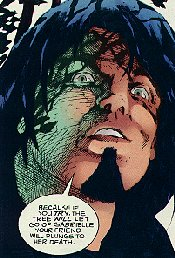
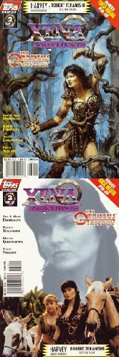
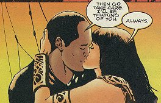
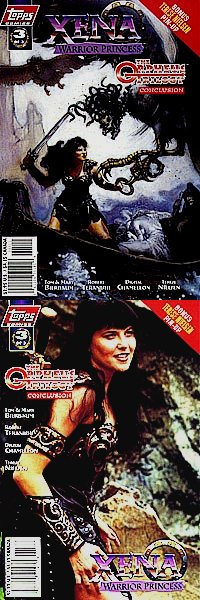
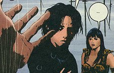

Xena: Warrior Princess/Orpheus #1 (of 3)
Title: Descent Into Death, Part 1
Date: March 1998
Actual Release: 1 April 1998
Pages: 32 (22 pgs story) plus pull-out poster
Cover Price: $2.95
Writer: Tom and Mary Bierbaum
Pencils: Robert Teranishi
Inks: Digital Chameleon
Letters: John Workman
Colors: Jessica Kindzierski and Digital Chameleon
Editor: Dwight Jon Zimmerman
Painted Cover: Adam Hughes
Photo Cover: Unknown
NOTE: Xena: Warrior Princess created by Robert Tapert and John Schulian
OVERVIEW:
Xena and Gabrielle are on the way to meet up with Orpheus when they are attacked by a local forest. The trees life them into the air and hold them. They hear the sound of Orpheus' lyre, and decide that Orpheus must need help getting his magical instrument back. They are wrong, though. It's Orpheus himself controlling the trees.
Orpheus heard, through the grapevine, that Xena had been down to the underworld before. And now he insists on Xena accompanying him down to rescue his wife, Eurydice. If she doesn't, he'll order the trees to kill Gabrielle. Xena swears to accompany him, and they leave Gabrielle up in the trees as they start their quest.
As they start their journey, Orpheus is overpowered by the scent of some Lotus flowers. It is the doing on one of the fates, Lachesis. She wants Xena to abandon her quest, because she's fallen in love with Orpheus, and knows she will never win over Orpheus is Eurydice is back in the picture. Xena refuses.
Lachesis sends an army of possible Xena's to fight Xena and force her to abandon Orpheus. Xena battles the dopplegangers and manages to pull Orpheus out while they are distracted by flying Chakrams.
They reach the river, and Orpheus uses his lyre to make the ferryman take them across. Down in the underworld, Lachesis tries to convince Hades that Orpheus must not succeed. Persephone agrees with Lachesis, and what man can resist two determined women? He agrees to keep Eurydice in the underworld.
Orpheus and Xena are confronted by an army of people who Xena killed as a warlord. They are determined to keep her out of their realm, as well as gain their revenge...
COMMENTS:

Manohman, the cover to this one just beats out all the rest. This art cover is the BEST in the series so far. Wonderful work from Adam Hughes.
The art is excellent, the story flows well. Robert Teranishi seems to have worked out the story flow problems and the result is an incredibly good read that's very easy on the eyes.
Some of the alternate Xena's are very interesting. There is an African Queen Xena, and a Callisto Xena... maybe they should make action figures based on these characters like they do with the Superman and Batman lines. "Ninja Xena with chakram action"!
CONCLUSION:
The art! The story is good, but the art makes this issue.
Review Date 21 June 1998 by Laura Gjovaag

Xena: Warrior Princess/Orpheus #2 (of 3)
Title: Descent Into Death, Part 2
Date: April 1998
Actual Release: 13 May 1998
Pages: 32 (22 pgs story) plus pull-out poster
Cover Price: $2.95
Writer: Tom and Mary Bierbaum
Pencils: Robert Teranishi
Inks: Digital Chameleon
Letters: John Workman
Colors: Jessica Kindzierski and Digital Chameleon
Editor: Dwight Jon Zimmerman
Painted Cover: Terese Nielsen
Photo Cover: Unknown
NOTE: Xena: Warrior Princess created by Robert Tapert and John Schulian
OVERVIEW:
Xena is faced with the many victims of her time as a war lord. They are determined to take their revenge on her for taking their lives. As they battle her, Orpheus mentions that they don't seem to like her. She asks if he can blame them, since it was her battle-lust that destroyed their lives. He admits that he cannot, that he's in the same situation, taking revenge on her for her crimes.
However, this fight will get them no closer to his goal, so he takes up his lyre and sings peace into the tormented souls' hearts, and they leave Xena to continue on her journey. Xena tells Orpheus she was ready to pay the price for her sins.
Hades and Persephone bicker. The other fates tell Lachesis she's mad to play this dangerous game to get one musician.
Gabrielle tricks some travellers into cutting down the enchanted tree she's trapped in, then runs to follow Xena and Orpheus.
Xena and Orpheus are once again attacked by Xena's victims, but these are not the innocents who deserved revenge, these are other war lords and murderers who deserved to die at Xena' hand. As she battles them, telling Orpheus that this is wrong, the Furies appear and explain that they are driving the murderers' souls on. One of the murderers steals Orpheus' Lyre and give it to the Furies, and earns his ticket back to mortality. The Furies tell the others they can return to life if they kill Xena and Orpheus.
Xena battles their way free, but they are trapped on the banks of a river of fire. They fall in, and Orpheus begs Xena to kill him. But they are rescued by a ship on the river of fire, piloted by Xena's long lost love, Marcus. Marcus explains that all of the underworld knows of their quest, and he brought this ship of stone across the river to see Xena. Orpheus asks why Xena hasn't rescued Marcus, then claims she must not love him as much as Orpheus loves Eurydice.
Gabrielle argues with Charon to take her across the river styx so she can help Xena. Charon refuses.
Marcus deposits the two at the front gate of Hades palace, where they are confronted with a living statue who demands the price of admission: one life. They have five seconds to decide which life, or the price doubles.
COMMENTS:

Another good cover, though it tackles stuff that happened in the last issue.
Again, this story flows well... the art is spectacular, but actually succeeds in telling the story.
Orpheus' anger at Xena is apparent when he nearly allows Xena's victims to destroy her. His understanding of her plight is also apparent in the song he sings to convince them to leave her alone. They forgive her, but Xena won't ever forgive herself.
Gabrille uses insults to get a passing woodsman to cut down the tree. She barely escapes her rescuers.
The fellow who steals Orpheus' lyre is not named, but he's very distinctive. I'm sure he must've been on the show at some point, but I can't place him. Anyone know who he is?
It was good to see Marcus again. And a sensible way to get them out of a jam, too.
CONCLUSION:
Excellent story, excellent art... buy it.
Review Date 21 June 1998 by Laura Gjovaag

Xena: Warrior Princess/Orpheus #3 (of 3)
Title: Descent Into Death, Part 3
Date: May 1998
Actual Release: 10 June 1998
Pages: 32 (22 pgs story) plus pull-out poster
Cover Price: $2.95
Writer: Tom and Mary Bierbaum
Pencils: Robert Teranishi
Inks: Digital Chameleon
Letters: John Workman
Colors: Jessica Kindzierski and Digital Chameleon
Editor: Dwight Jon Zimmerman
Painted Cover: Terese Nielsen
Photo Cover: Unknown
NOTE: Xena: Warrior Princess created by Robert Tapert and John Schulian
OVERVIEW:
The doorman to Hades palace demands one life admission, and if they don't decide whose life in five seconds, the price doubles. Xena decides that the doorman's life is the admission, and kills him.
Xena argues for Eurydice's life with Hades. Hades insists that he cannot allow her to live again, and calls for guards to escort them out. Xena battles the guards, then uses a pole taken from a guard to leap above Hades throne and steal the helm of invisibility. Hades argues with Xena, begging her to see reason. She demands that Eurydice be freed. If he doesn't agree, she will use the helm to spirit Eurydice free.
Hades offers Xena a deal. Eurydice will follow them back to the upper world, but they mustn't look back at all to see her. Xena agrees against Orpheus' protests, but adds a provision: when they reach the upper world, Orpheus' lyre will be returned to him. All the parties agree, and Orpheus and Xena set off to the upper world. Orpheus complains about the deal, while Persephone complains too.
Gabrielle tries to sneak onto the ferry. Charon catches her.
The Furies attempt to drive Xena mad while they journey. They then offer to lift her burden if she drops the quest. Then they offer to free Marcus instead of Eurydice. She painfully declines.
Gabrielle sees Xena and Orpheus pass her, and starts after them just as Charon finally relents and pulls her toward the boat.
Orpheus reaches the surface and starts to look back, but Xena decks him since Eurydice hasn't made it yet. He doesn't look, but the Furies grab Eurydice anyway. Xena gives chase, and sees Gabrielle on the boat and tells her to stop the Furies. Gabrielle throws her staff, and Eurydice falls toward the river and is saved by Xena.
Everyone is finally safe in the world of the living. Well, safe right up until Lachesis, Hades, or the Furies decide to take revenge...
COMMENTS:

Another good cover by Terese Nielsen, of Xena battling harpies (?) from a boat. I really love the covers to these books, I just wish they would reflect the story on occassion.
Xena chooses to keep her word to Orpheus even when the Furies offer her Marcus. Only then does Orpheus get an inkling of her love. Even then, I don't think Orpheus understands it.
Gabrielle was being such a pest Charon agreed to take her over, just about the time she no longer wanted to go.
So the ancient myth gets a happy ending. Not a bad adaptation of the well-known tale. The Xenaverse has some strange twists in it.
CONCLUSION:
This is a great series. Take a peak inside the cover, if you like the art, buy it.
Review Date 21 June 1998 by Laura Gjovaag